17 Collisions
17.1 Collision of Two Bodies
Question: What happens in reality when two cars collide?
In reality, colliding bodies deform — possibly permanently — and their rotational inertia may change.
Ignoring rotational motion, the simplest model uses a mass particle for each body. Since particles do not deform, we introduce the coefficient of restitution \(e\).
17.2 Frictionless, Oblique, Central Impact of Two Bodies
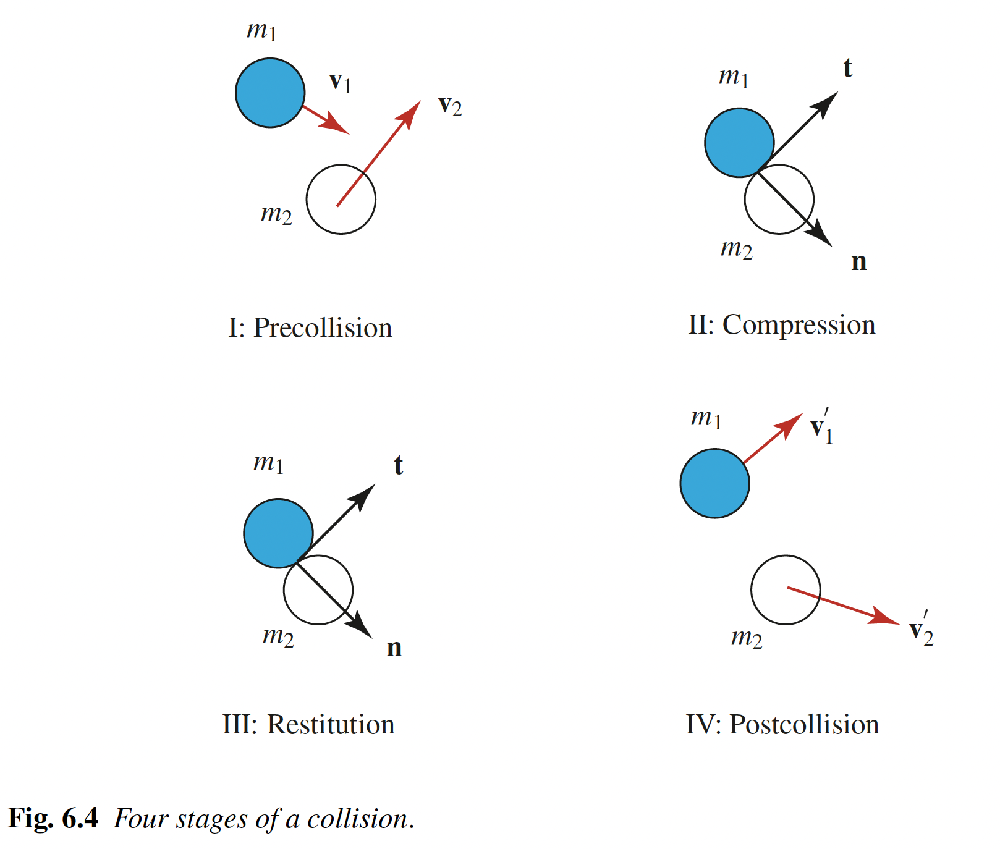
17.2.1 Assumptions
- Model each body as a mass particle.
- We ignore the rotational inertias of bodies (purely translational motion).
- As the bodies are in a state of purely translational motion, all the points on the body have the same velocity.
- The position vector of the mass particle is defined to coincide with the center of mass of the body it models.
- No friction between particles during collision — all impact forces are along \({\bf n}\).
- The duration of compression (\(t_1-t_0\)) and restitution (\(t_2-t_1\)) are very small.
- At time \(t_1\), both particles have the same velocity along \({\bf n}\): \(v_{II}\).
- \({\bf F}_{1C} = -{\bf F}_{2C}\), \({\bf F}_{1R} = -{\bf F}_{2R}\).
17.2.2 Impact Stages
Let \({\bf n}\) be the common unit normal between the bodies when they collide. This vector is normal to the lateral surfaces of both bodies at the unique point of contact. Define a set of orthonormal vectors \(\{{\bf n},{\bf t}_1,{\bf t}_2\}\) by selecting \({\bf t}_1\) and \({\bf t}_2\) to be unit tangent vectors to the lateral surface of both bodies at the point of contact. The impact is assumed to be such that these vectors are constant for the duration of the impact. At the end of stage II, the velocities of the bodies in the direction of \({\bf n}\) are assumed to be equal \((=v_{II})\).
17.2.3 Linear Impulses During Impact
Question: Draw the FBDs of \(m_1\) and \(m_2\) separately during compression and restitution.
- \({\bf F}_{1_d} = F_{1_d}{\bf n}\): force exerted by body 2 on body 1 during compression.
- \({\bf F}_{1_r} = F_{1_r}{\bf n}\): force exerted by body 2 on body 1 during restitution.
- \({\bf F}_{2_d}\), \({\bf F}_{2_r}\): reaction forces by body 1 on body 2.
- All other forces have resultants \({\bf R}_1\) and \({\bf R}_2\).
Since the collision duration is very small, the impulses of \({\bf R}_1\) and \({\bf R}_2\) vanish. Define the time instants:
- \(t_0\): time just before collision
- \(t_1\): time at the end of compression
- \(t_2\): time at the end of restitution
Approximating: \[\begin{align} \begin{split} & \int_{t_0}^{t_1}\lp{\bf F}_{1_d}(\tau)+{\bf R}_1(\tau)\rp d\tau \approx \int_{t_0}^{t_1}{\bf F}_{1_d}(\tau)\,d\tau,\\ & \int_{t_1}^{t_2}\lp{\bf F}_{1_r}(\tau)+{\bf R}_1(\tau)\rp d\tau \approx \int_{t_1}^{t_2}{\bf F}_{1_r}(\tau)\,d\tau,\\ & \int_{t_0}^{t_1}\lp{\bf F}_{2_d}(\tau)+{\bf R}_2(\tau)\rp d\tau \approx \int_{t_0}^{t_1}{\bf F}_{2_d}(\tau)\,d\tau,\\ & \int_{t_1}^{t_2}\lp{\bf F}_{2_r}(\tau)+{\bf R}_2(\tau)\rp d\tau \approx \int_{t_1}^{t_2}{\bf F}_{2_r}(\tau)\,d\tau. \end{split} \end{align}\]
We assume equal and opposite collisional forces: \[\begin{align} \begin{split} & {\bf F}_{1_r} = -{\bf F}_{2_r},\\ & {\bf F}_{1_d} = -{\bf F}_{2_d}. \end{split} \end{align}\]
We now define the coefficient of restitution: \[\begin{align} e = \frac{\int_{t_1}^{t_2}{\bf F}_{1_r}(\tau)\cdot{\bf n}\,d\tau}{\int_{t_0}^{t_1}{\bf F}_{1_d}(\tau)\cdot{\bf n}\,d\tau} = \frac{\int_{t_1}^{t_2}{\bf F}_{2_r}(\tau)\cdot{\bf n}\,d\tau}{\int_{t_0}^{t_1}{\bf F}_{2_d}(\tau)\cdot{\bf n}\,d\tau}. \end{align}\]
Question: What does \(e=0\) and \(e=1\) mean?
- \(e=1\): perfectly elastic collision — compression impulse equals restitution impulse.
- \(e=0\): perfectly plastic collision — no restitution impulse.
- In general \(0\leq e\leq 1\), determined experimentally.
17.2.4 The Coefficient of Restitution in Terms of Velocities
To write the coefficient of restitution in a more convenient form using velocities, we first write the linear impulse-linear momentum equations.
Question: For the above impulses, complete the linear impulse-linear momentum equations.
\[\begin{align} \begin{split} & m_1 v_{II} - m_1{\bf v}_1\cdot{\bf n} = \int_{t_0}^{t_1}{\bf F}_{1_d}(\tau)\cdot{\bf n}\,d\tau,\\ & m_2 v_{II} - m_2{\bf v}_2\cdot{\bf n} = \int_{t_0}^{t_1}{\bf F}_{2_d}(\tau)\cdot{\bf n}\,d\tau,\\ & m_1{\bf v}_1'\cdot{\bf n}-m_1 v_{II} = \int_{t_1}^{t_2}{\bf F}_{1_r}(\tau)\cdot{\bf n}\,d\tau = e\int_{t_0}^{t_1}{\bf F}_{1_d}(\tau)\cdot{\bf n}\,d\tau,\\ & m_2{\bf v}_2'\cdot{\bf n}-m_2 v_{II} = \int_{t_1}^{t_2}{\bf F}_{2_r}(\tau)\cdot{\bf n}\,d\tau = e\int_{t_0}^{t_1}{\bf F}_{2_d}(\tau)\cdot{\bf n}\,d\tau. \end{split} \end{align}\]
From these 4 equations, we can isolate the common velocity \(v_{II}\) of the particles along \({\bf n}\) at time \(t_1\): \[\begin{align} v_{II} = \frac{{\bf v}_1'\cdot{\bf n}+e{\bf v}_1\cdot{\bf n}}{1+e} = \frac{{\bf v}_2'\cdot{\bf n}+e{\bf v}_2\cdot{\bf n}}{1+e}. \end{align}\]
From this, we get the familiar expression for the coefficient of restitution: \[\begin{align} e = \frac{{\bf v}_2'\cdot{\bf n}-{\bf v}_1'\cdot{\bf n}}{{\bf v}_1\cdot{\bf n}-{\bf v}_2\cdot{\bf n}}. \end{align}\]
When one object impacts a massive constrained object (e.g. a wall), the velocity of the massive object is unaffected by the collision.
17.3 Example: The Most General Planar Impact Problem
Question: Given particles \(m_1\) and \(m_2\) with pre-impact velocities \({\bf v}_1\) and \({\bf v}_2\), find the post-impact velocities. The coefficient of restitution \(e\) is given.
There are 4 unknowns (components of \({\bf v}_1'\) and \({\bf v}_2'\) along \({\bf n}\), \({\bf t}_1\), \({\bf t}_2\)). Along the tangent directions: velocities are unchanged. Along \({\bf n}\): we have the conservation of linear momentum and the restitution equation.
17.4 Energy Loss During Impact
Pre-impact and post-impact kinetic energies: \[\begin{align} T &= \frac{1}{2}m_1{\bf v}_1\cdot{\bf v}_1+\frac{1}{2}m_2{\bf v}_2\cdot{\bf v}_2,\\ T' &= \frac{1}{2}m_1{\bf v}_1'\cdot{\bf v}_1'+\frac{1}{2}m_2{\bf v}_2'\cdot{\bf v}_2'. \end{align}\]
The energy lost: \[\begin{align} \begin{split} T-T' &= \frac{1}{2}m_1\lp({\bf v}_1\cdot{\bf n})^2-({\bf v}_1'\cdot{\bf n})^2\rp+\frac{1}{2}m_2\lp({\bf v}_2\cdot{\bf n})^2-({\bf v}_2'\cdot{\bf n})^2\rp\\ &= \frac{m_1 m_2}{2(m_1+m_2)}\lp{\bf v}_1\cdot{\bf n}-{\bf v}_2\cdot{\bf n}\rp^2(1-e^2). \end{split} \end{align}\]
Hence, for \(0\leq e\leq 1\), kinetic energy cannot increase as a result of impact.
17.5 Negative Values of the Coefficient of Restitution
Question: What does a negative \(e\) mean for a ball impacting a wall?
When the coefficient of restitution is negative, \[\begin{align} e = \frac{{\bf v}_2'\cdot{\bf n}-{\bf v}_1'\cdot{\bf n}}{{\bf v}_1\cdot{\bf n}-{\bf v}_2\cdot{\bf n}} \leq 0, \end{align}\] and hence \({\bf v}_1'\cdot{\bf n}-{\bf v}_2'\cdot{\bf n}\) and \({\bf v}_1\cdot{\bf n}-{\bf v}_2\cdot{\bf n}\) have the same sign. As a result, the colliding bodies pass through each other during the course of the impact. To eliminate this behavior, it is generally assumed that \(e\) is positive.
17.6 Quiz: Check Your Understanding
Notation: \({\bf n}\) is the line of impact, \({\bf t}\) is tangent at contact, and \(e\) is the coefficient of restitution, \[\begin{align*} e = \frac{{\bf v}_2'\cdot{\bf n}-{\bf v}_1'\cdot{\bf n}}{{\bf v}_1\cdot{\bf n}-{\bf v}_2\cdot{\bf n}}, \end{align*}\] where primes denote velocities just after impact.
Choose one answer per question and press Check answer. You have two attempts per question. If you are signed in, your answers are saved.
1. Two smooth disks collide obliquely on a frictionless table. Which statement is correct?
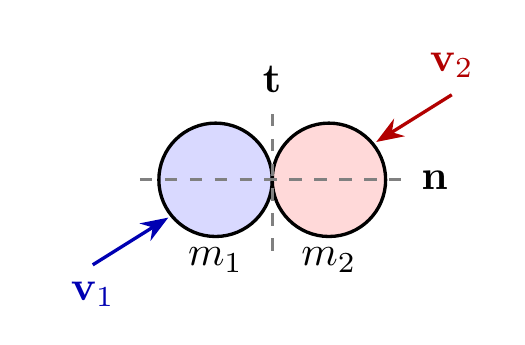
- Each disk’s momentum is conserved along \({\bf n}\); the total momentum along \({\bf t}\) is not conserved.
- Only the total momentum along \({\bf t}\) is conserved.
- The total momentum is conserved along \({\bf n}\); each disk’s momentum is conserved along \({\bf t}\).
- Each disk’s momentum is conserved in every direction.
The disks are smooth, so the contact impulses act only along \({\bf n}\), and they are equal and opposite. Along \({\bf n}\), each disk’s momentum changes but the total does not. Along \({\bf t}\) there is no impulse at all, so each disk keeps its own momentum.
2. A ball hits a smooth fixed floor obliquely. Which component of the ball’s linear momentum is conserved during the impact?
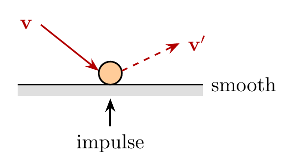
- The horizontal (tangential) component.
- The vertical (normal) component.
- Both components.
- Neither component.
A smooth floor can only push normal to itself, so the impulse on the ball is vertical. The horizontal momentum is unchanged; the vertical momentum reverses (scaled by \(e\)).
3. Same ball, but the floor is now rough and the ball slides during the impact. Is the ball’s horizontal momentum still conserved?
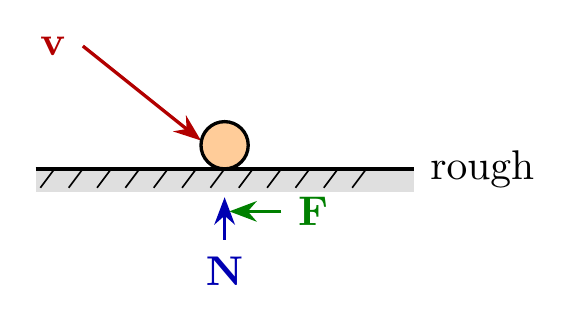
- Yes, because friction is non-impulsive.
- Yes, because \(e < 1\).
- Only if \(e = 1\).
- No, because friction applies a tangential impulse.
While the ball slides, the friction force is \(\mu N\). The normal force \(N\) is impulsive (very large over a very short time), so the friction force is impulsive too. It gives a horizontal impulse, and the horizontal momentum changes.
4. A bullet embeds in a block hanging at rest from a vertical inextensible string. During the short impact, what is conserved for bullet + block?
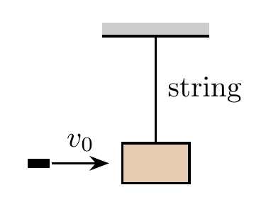
- Kinetic energy.
- Horizontal linear momentum only.
- Total linear momentum in all directions.
- Nothing.
Take bullet + block as the system. The string tension is vertical and can be impulsive; gravity is not impulsive. No external impulse acts horizontally, so the horizontal momentum is conserved. Kinetic energy is not: the bullet embeds, so this is a perfectly plastic impact.
5. A 2 kg particle moving at 6 m/s hits a 1 kg particle at rest, head-on, with \(e = 0.5\). What is the speed of the 1 kg particle after impact?
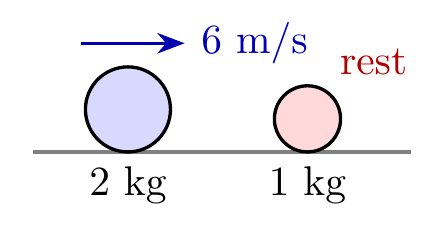
- 3 m/s
- 8 m/s
- 6 m/s
- 12 m/s
Momentum: \(2(6) = 2v_1' + 1\,v_2'\). Restitution: \(v_2' - v_1' = 0.5\,(6 - 0) = 3\). Solving gives \(v_1' = 3\) m/s and \(v_2' = 6\) m/s.
6. For the impact in Question 5, how much kinetic energy is lost?
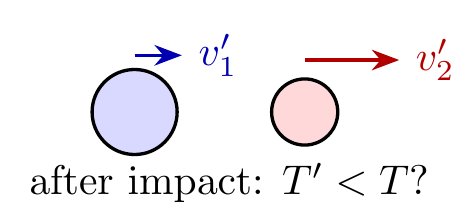
- 9 J
- 27 J
- 0 J
- 18 J
Before: \(T = \frac{1}{2}(2)(6)^2 = 36\) J. After: \(T' = \frac{1}{2}(2)(3)^2 + \frac{1}{2}(1)(6)^2 = 9 + 18 = 27\) J. The loss is \(36 - 27 = 9\) J.
Bonus. A ball is dropped from rest from height \(h\) onto a fixed floor with \(e = 0.5\). How high does it bounce?
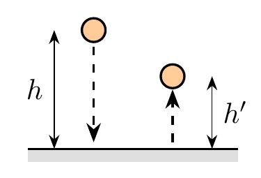
- \(h/2\)
- \(h\)
- \(h/\sqrt{2}\)
- \(h/4\)
The ball reaches the floor with speed \(v = \sqrt{2gh}\) and leaves with \(e v\). It rises to \(h' = (ev)^2/(2g) = e^2 h = h/4\).
17.7 Exercises
The following problems are from Set 13 – Collisions. In all of the following problems, specify the system you are considering. Are there any conservations in that system? Remember that the linear momentum of a system is conserved in a fixed direction if the sum of forces acting on the system along this direction is zero.
1. [MKB 03-142]
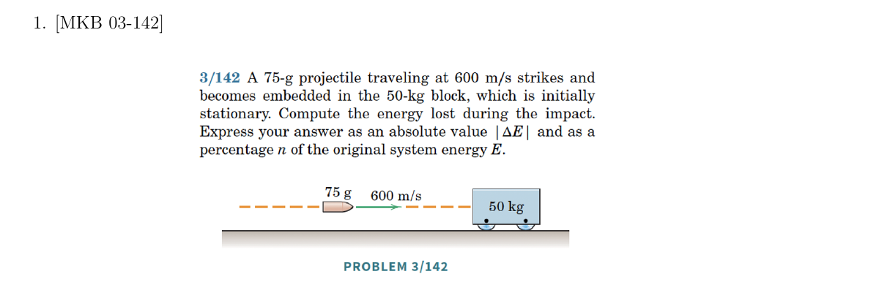
2. [MKB 03-196]
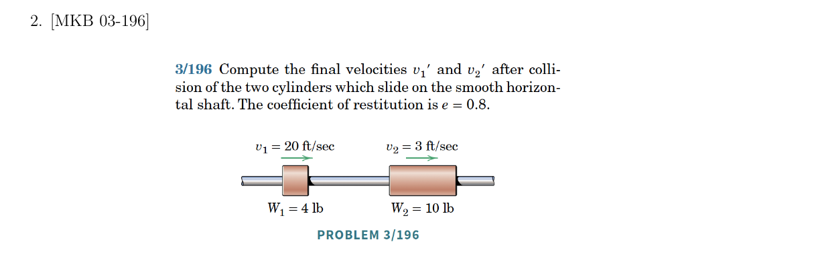
3. [MKB 03-197]
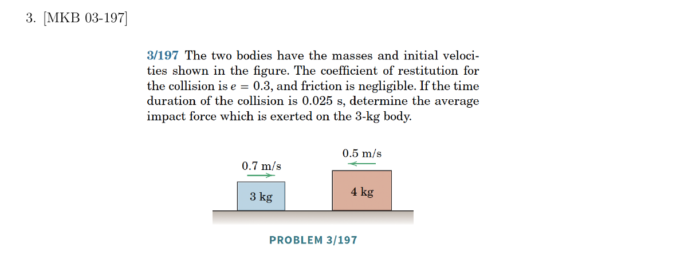
4. [03-201]
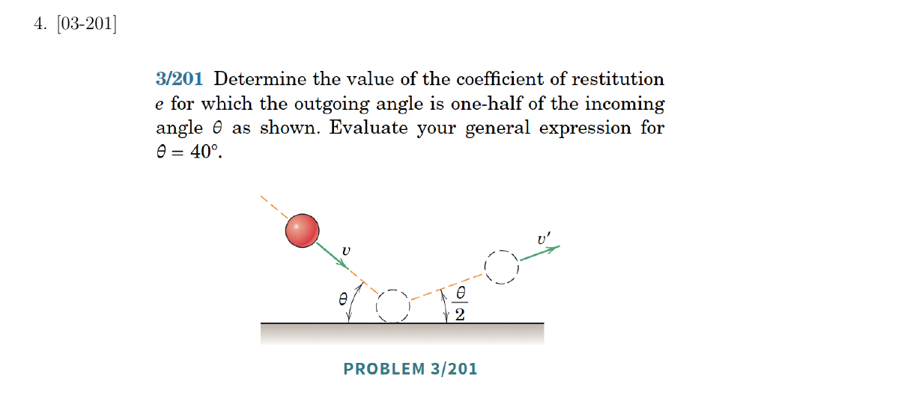
5. [03-212]
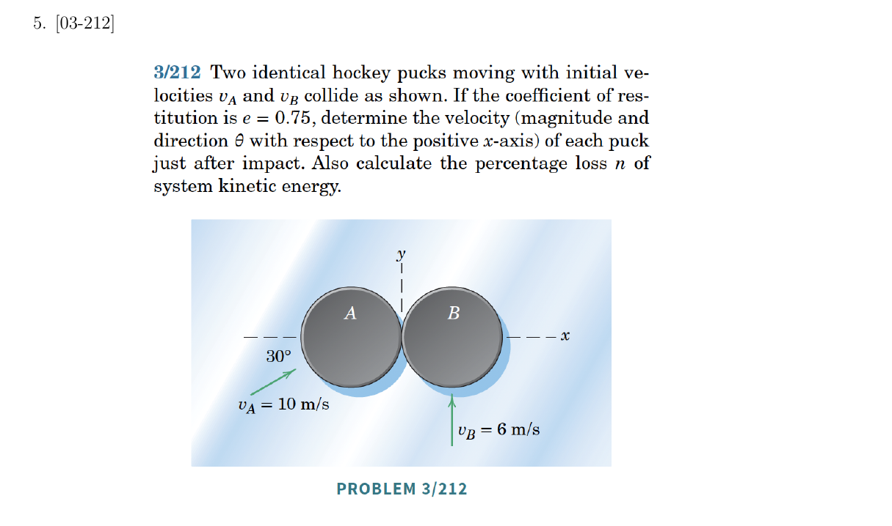